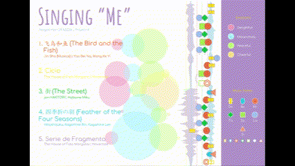
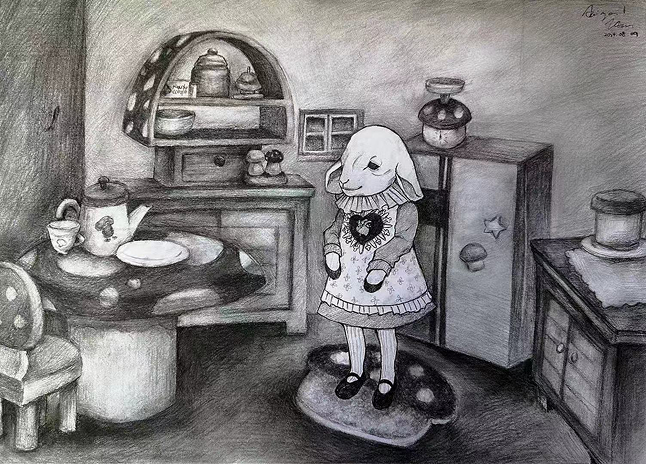

Gallery Beyond
360 Immersive Gallery

A clean, vibrant visualization of the songs that shaped my life and the emotions they carry.

The artwork reflects my feelings of confusion about the present, as if I am caught between clarity and ambiguity.

A sketch of a sheep girl and her home. I drew this because I like sheep and mushroom.

Poster design for a made-up movie.